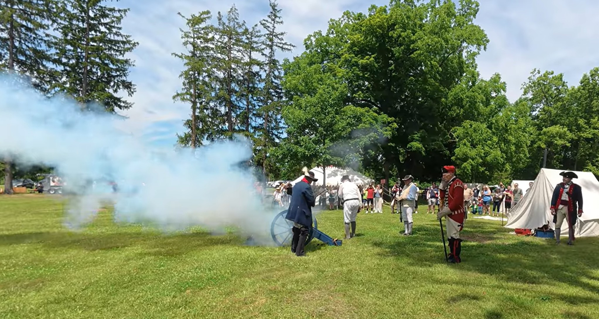
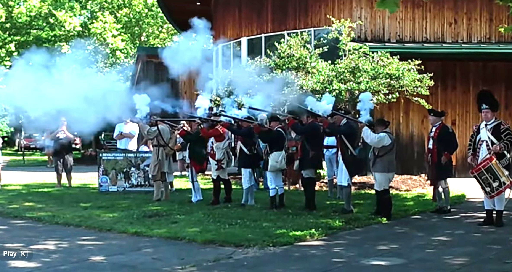

A Gocation Life destination
Adena Mansion
& Gardens
Chillicothe, Ohio
An early Ohio home, terraced gardens, and a little history on the hilltop.

The place & its story
A little history
Adena was the home of Thomas and Eleanor Worthington and their ten children. Designed by Benjamin Henry Latrobe and completed in 1807, the hilltop mansion is a National Historic Landmark. Thomas Worthington became Ohio’s sixth governor.
The grounds include terraced flower and vegetable gardens, an orchard, and outbuildings that offer a glimpse of life on an early 19th-century estate.
History sources: Ohio History Connection · National Park Service
Gocation Life
Our Visit
Our Adena photo collection captures living history in action, with period dress, musket smoke, and a cannon demonstration on the grounds.
Watch the cannon demonstration and flag-raising tribute in our two Gocation Life videos below.

Come along with us
Watch our Adena visit
Raising the flag at Adena Mansion - A Revolutionary Tribute in Ohio
Watch on YouTube ↗Both videos verified as Gocation Life uploads.
A reason to come back
Ideas for a return visit
Take time for the gardens
Plan a seasonal stroll through the terraced flower and vegetable gardens, with time for the orchard and grounds.
Look inside the story
Check the mansion tour schedule and allow time for the education and visitor center. Ohio History Connection suggests two hours or more for a visit.
Ideas based on the official visitor guide; these are suggestions for next time.
Travel meets vintage
A stop in Chillicothe
1803 Antiques Mercantile
90 E. Water Street
Chillicothe, OH 45601
A downtown option for antiques and architectural salvage. Check the shop’s current hours before adding it to your day.
Shop location & hours ↗Verified from the shop’s website. A nearby idea, rather than a stop documented in our visit.
Before you go
Plan a visit
Check the season
Adena is a seasonal destination. Confirm opening dates, tour times, admission, and access needs directly with the site before setting out.
Official visitor information ↗Visitor details and linked sources checked October 26, 2026.